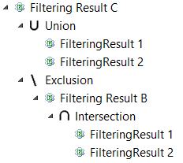

Once the Filtering Add-On is installed, you have to activate this viewpoint for each project you want to work with, to see how please refers to: Capella Guide > User Manual > Viewpoints > Activation.
Then, these projects can be enriched with filtering information. That means that for creating a generic product the user should follow the standard Capella new project creation.
The filtering model supports defining a set of filtering points called criterion. The filtering model is defined in the FilteringModel element which is created as a child of System Engineering. For creating a FilteringModel right-click the System Engineering model element.
New criterion could be added once the user creates the FilteringModel element.

The user can also create constraints for documentation.
Criteria can also be organized in a package hierarchy:
Each Capella element contains a Filtering properties section. Double click an element or see the Properties view of a given element.

A criterion selector will appear and the user can select the criterion or set of criteria associated with the given element.
If no filtering criterion is assigned explicitly to a given Capella element, it is still possible that this element could be assigned implicitly to a criterion. For example: a Part element of a given optional element or the child of an optional element. This derived property of a Capella element is called Implicit Criteria.
Also, the action to associate criterion to model elements is available selecting a Capella element, right click, and

The user can also select multiple model elements and apply criterion selections to all of them.
The initial state of this dialog shows the current criteria status of the selected elements. These figures present possible initial states of the assigning dialog and its meaning:
 |
 |
 |
|
|
|
|
In the third case, if no user modifications are performed to grayed checkbox in FilteringCriterion 2, the tags for this criterion will remain untouched.
Users may want to assign to model elements the criterion that were previously assigned to an existing Filtering Result (). A dedicated selector in the Assign Filtering Criteria dialog allows the user to reuse criterion selections.

If the user is modifying the Capella model by adding new elements that will contribute to a criterion (or to a given criterion selection), then it will be interesting to be able to automatically assign criterion when creating any model element. First the user should create a Creation Default Filtering Criterion Set element as child of System Engineering and then select the criterion in the properties view of this element.

Once Domain Engineers provide a Generic Model to derive products, Application Engineers can use it to extract products based on their criterion selections.
To create filtering results (aka configurations) first the user should create a FilteringResults element as child of the System Engineering element.
Then the user could create a specific FilteringResult as child of the filtering results element and select its criterion in its properties view.
Filtering results can be organized into a hierarchy of packages:
There are two types of Filtering Results:


Different operators can be used to compose filtering results under a parent Composed Filtering Result:
When selecting a criteria in the Filtering Model, the user could see in the Semantic Browser the filtering results referencing this criteria.
Let us imagine a model containing the following System Functions:

Let us consider the following Simple Filtering Result 1:

And Simple Filtering Result 2:

A Composed Filtering Result A, containing the Union operator for Filtering Result 1 and Filtering Result 2 will provide the following result:


A Composed Filtering Result B, containing the Intersection operator for Filtering Result 1 and Filtering Result 2 will provide the following result:


A Composed Filtering Result C containing the the Union operator for Filtering Result 1 and Filtering Result 2 and the Exclusion operator of the Composed Filtering Result B, will provide the following result:


Right click on System Engineering element and then New Diagram / Table > [FILTERING] Product family
The matrix allows modifying, creating and deleting filtering results and criteria. It also allows applying filters and other basic cross table functionalities.

This action is available right clicking in a FilteringResult element.

The user should open the Project and Capella session if closed. Also there is the restriction that a generic product project can only contains one Capella systems engineering project.
In the following dialog the users should introduce the name of the product that is going to be extracted. By default it will be the name of the selected FilteringResult. A new project will be created in the workspace. This specific product will contain only the elements that were associated to the selected criterion in the case of a simple filtering result. In case of a composed filtering result, derived product is computed using operators (union, intersection and exclusion) on a set of filtering results.

|
Notice that description hyperlinks could reference an incorrect element if the session of the Domain project is opened while the session of a derived project is also opened. |
|
Derivation of a model referencing libraries will not derive the referenced libraries. So on, libraries will remain untouched/not derived and ALL its referenced elements will remain referenced by the application project even if these library's elements were not assigned to the criterion of the derivation. |
When a model references libraries, it is possible to assign criterion defined in referenced libraries to elements from the given model. Such criterion will be available on the assigning wizard.


The set of available criterion in the wizard depends on model elements to be assigned; In case where assigning is made on elements from a referenced library, criterion defined in the project will not be proposed (to avoid cycle dependency between library and project)
Capella can't have two projects with the same ID and referencing the same library.
If your project has at least one reference to a library, you must check the corresponding option in Filtering preference page.
Windows > Preferences > Capella > Filtering

After derivation, application project will have a different project ID. It means, if you use DiffMerge for application/domain model comparison, it will fail. By default, DiffMerge use ID for comparison between models.
|
If you want to use DiffMerge between application and domain model, please follow these instructions:
|
Once you select a criterion for a given element it appears in the Semantic Browser, as a suffix in the Capella Project Explorer and also with a question mark decorator in the diagram. The decorator appears in the top-right side of the elements and in the center in the case of links.
There are some preferences that could be adjusted for this visualization For the Capella Navigator, image and text criterion decorators could be activated / deactivated in

For Capella diagrams decorators could be activated / deactivated using a layer.
A global overview of the associated criterion could be obtained right clicking in a model element and selecting
 Filtering >
Filtering >
 Filtering Criteria Overview
.
Filtering Criteria Overview
.
The overview will show the elements with criterion assigning and also their related elements. For a full overview perform the action at Project element level.

This Overview has filtering options by selecting a criterion or by introducing an element name. It is also possible to export this overview as CSV or TXT file.
When working with diagrams in the definition of the Generic Product model it will be desired to filter based on criterion. Notice that filtering, show/hide and pinning functionalities are not available for sequence diagrams.
Right click in the Diagram canvas
 Filtering >
Filtering >
 Hide Optionals
Hide Optionals
 Filtering >
Filtering >
 Hide Common
Hide Common
These filters could be used to hide all the optional elements (those that have associated criterion) or to hide common elements respectively. Common elements are those that are not associated with any criterion and therefore are part of the core of the product family. If a filter is active in the Diagram it appears as checked.
In order to hide/show elements based on filtering criterion/results you need to activate the Diagram Filtering Criteria Visibility view.
You need to activate the view using the check box "Diagrams reflect the filtering result":
Once the view is shown, you need to click on and .aird file or a child element to load the Filtering Model into the view:
Now you need to activate the view to start filtering your model:
You can select a filtering result in the drop down menu:
In the case of simple result the tree viewer displays a set of criterion:
In the case of composed results the tree viewer displays a read only set of child results:
You can modify the set of selected criterion and then hit "Refresh" button on the view to see the result in the diagram :
|
Notice that all the diagram filters could be used in combination. For example Hide Common and Filtering for a given criterion will show the criterion specific elements in the diagram. |
Right click in the Diagram canvas:
 Filtering >
Filtering >
 Pin/unpin criterion
Pin/unpin criterion
The user can pin/unpin the associated diagram elements of a given set of criterion.
Right click in the Diagram canvas:
 Filtering >
Filtering >
 Select criterion
Select criterion
The user can select the associated diagram elements of a given set of criterion. There is also a checkbox that allows the user to include all the common diagram elements in the selection.
Metrics could be seen right clicking the Systems Engineering model element.
 Filtering >
Filtering >
 Filtering metrics
Filtering metrics
The optional ratio helps to understand where is the filtering in the model and the relative size of the optional elements. The optional rate showed for each model element is defined as:
Optional ratio (element) = 100 if element is optional. 0 if element is not optional and it has no child. Else optional ration will be (number of optional children / total number of children)

Filtering information will be propagated between layers using the default Capella Transitions. For example the following screenshot shows the transition of an optional Actor from System Analysis to Logic Architecture.
The transition of filtering information could be deactivated in
Window > Preferences > Capella > Transition/Generation
Below DiffMerge wizard allow the user to see the effects of the transition and also to be able to decide for each transition if the filtering information should be propagated or not.
The Filtering Add-On contributes new constraints to Capella Models mainly to assure the consistency of the filtering information assigned to model elements. This constraints could be shown, activated or deactivated at
Window > Preferences > Model Validation > Constraints

To run a validation the user should perform the standard Capella validation on any Capella element.
The user could customize the Capella Project Explorer in order to show or hide the filtering related elements.
The AssociatedFilteringCriterionSet elements are hidden to users by default. All the functionalities are available without showing these elements so showing them is not recommended. If still a user wants to show them, the user should customize the Capella Project Explorer view accordingly.
Now the user is able to see and modify the Associated criterion set elements.

Filtering information is exported when users export the model to a remote repository. After connecting to a remote model all the presented functionalities are available except the derivation.
Derivation must be performed in a local project. If a derivation want to be performed from a remote model users must import the model from the remote repository.